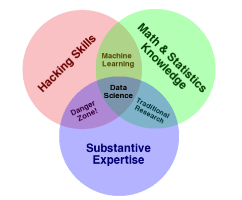

DATA SCIENCE
Data Science course
Under the guidance of Barton Poulson
Data Science :
• Coding,math,statistics in applied settings.
• Analysis of diverse data.
• Inclusive analysis.
Demand:
• DS takes unstructured data then finds order,meaning and value.
• DS provides insight and competitive advantage.

Coding: Pyton and R
Databases: SQL
Command Line: BASH
Search: Regex
Math: Probability, algebra, regression
Expertise: Goals, methods, constraints
• DS isnt just technical
• Contextual skills matter